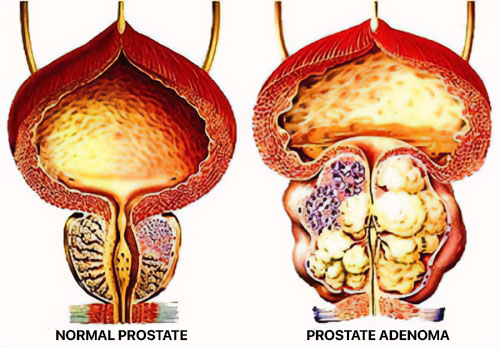

En Algérie, ils ne savent pas comment traiter la prostatite ! L'universitaire japonais de 95 ans a révélé comment guérir la prostatite et l'adénome de la prostate à tout âge.
L'urologue, professeur et universitaire japonaise de renom, lauréate du prix Nobel Aretha Tanaka, a pris sa retraite à l'âge de 85 ans, mais il n'est pas devenu inactif mentalement ou physiquement. Dix ans après sa retraite, le professeur Tanaka continue d'écrire dans le domaine de l'urologie. Le professeur a 95 ans mais affirme que les problèmes de prostate peuvent être évités même à cet âge.

Le professeur Tanaka affirme que le secret d’une prostate saine et de la vitalité masculine réside dans la propreté des vaisseaux sanguins. S'ils sont propres et sains, la prostatite et l'adénome ne dérangeront jamais un homme. Et l’ancien urologue confirme ses propos.
Notre correspondant a pu interviewer le prix Nobel. Le professeur Tanaka a donné une description détaillée de la méthode de traitement de la prostatite.
Correspondant : Professeur Tanaka, vous avez déclaré à plusieurs reprises qu'une prostate saine est la clé de la santé et de la longévité d'un homme. Pourquoi penses-tu ça?
Professeur Tanaka : C'est simple. Chaque corps est un système complexe régulé par des hormones. Le fonctionnement de tous les organes et systèmes internes dépend du fond hormonal global. Chez l’homme, le principal régulateur de la santé est la prostate. Au sens figuré, on peut l'appeler le « deuxième cœur » d'un homme.
En vieillissant, les vaisseaux du système génito-urinaire se bouchent, perdent de leur élasticité et nourrissent moins les organes. En fin de compte, l’approvisionnement en sang implique l’apport d’oxygène et de nutriments, ainsi que l’élimination du dioxyde de carbone et des produits métaboliques des organes internes. En conséquence, on observe une stagnation de la sécrétion prostatique (un liquide spécial - ndlr). La prostate commence à s'enflammer et, sans traitement rapide, un adénome se forme.
Une photo de la récente présentation du professeur Tonaka au Symposium international des urologues et andrologues.
En conséquence, un homme éprouve non seulement des problèmes de fonction érectile, mais aussi des difficultés à uriner correctement. En nettoyant périodiquement les vaisseaux du système urogénital, on peut éviter la stagnation de la sécrétion et l'inflammation de la prostate. Comme je l’ai déjà mentionné, le principal régulateur du corps masculin est la prostate. Cela signifie qu'en nettoyant les vaisseaux sanguins, vous pouvez prolonger considérablement votre vie et pas seulement guérir la prostatite. Et ce n’est pas seulement une théorie. Je le recommandais à mes patients, et maintenant je le pratique moi-même. De plus, avec l’altération de la fonction normale de la prostate, d’autres pathologies commencent à se développer.

Correspondant : Quelles pathologies sont causées par la stagnation du sang dans le bassin et les vaisseaux obstrués ?
Pr Tanaka : Les vaisseaux sanguins impurs affectent tout le corps. Mais, bien entendu, ils touchent principalement les organes directement liés au système génito-urinaire :
 La prostatite est une pathologie qui touche
85 % des hommes de plus de 40 ans.
La prostatite est une pathologie qui touche
85 % des hommes de plus de 40 ans.
 L'adénome de la prostate est la prochaine
complication après la prostatite.
Dans 47 %
des cas, elle entraîne la formation d’une
tumeur cancéreuse au niveau de la prostate.
L'adénome de la prostate est la prochaine
complication après la prostatite.
Dans 47 %
des cas, elle entraîne la formation d’une
tumeur cancéreuse au niveau de la prostate.
 L'épididymite (inflammation douloureuse des
testicules) survient lorsque l'infection se
propage à partir d'une prostate enflammée.
L'épididymite (inflammation douloureuse des
testicules) survient lorsque l'infection se
propage à partir d'une prostate enflammée.
Ces complications ne peuvent être évitées si la prostatite n’est pas traitée ! En Algérie, un homme sur deux de plus de 40 ans souffre de prostatite à un stade ou à un autre. Les urologues le savent ; ils savent qu'il est nécessaire de rétablir l'apport normal de nutriments aux organes pelviens, d'augmenter la production naturelle de testostérone. Cependant, pour une raison quelconque, de telles pratiques ne sont pas courantes en médecine au Algérien.
Au lieu de cela, ils prescrivent des antibiotiques, un massage direct de la prostate pour la prostatite et même une hormonothérapie ! Même s’ils comprennent que ceux-ci ont un effet temporaire. Et il faut nettoyer les vaisseaux sanguins. À propos, en Occident, tous les hommes de plus de 40 à 50 ans font cela depuis plus d'un demi-siècle. Cela signifie que tout le monde connaît le nettoyage des vaisseaux sanguins pour lutter contre la prostatite. Pourquoi ils ne le font pas pour vous est une grande question pour moi.
Correspondant: Existe-t-il des symptômes pouvant indiquer une obstruction des vaisseaux sanguins ?
Pr Tanaka : Oui, bien sûr.
Les principaux symptômes d'une perturbation de l'apport sanguin aux organes du système génital comprennent :
- Brûlure pendant la miction
- Sensation de vessie pleine
- Faiblesse épisodique
- Fatigue chronique
- Insomnie
- Détérioration de la vision et de l'audition
- Hypertension artérielle
- Peau pâle
Cependant, même si vous ne présentez pas ces symptômes, un nettoyage vasculaire du système génito-urinaire doit être effectué régulièrement après 40 ans.
Correspondant : Pouvez-vous partager votre secret pour nettoyer les vaisseaux sanguins et traiter la prostatite ?

Prof.Tanaka : Prof.Tanaka : Jusqu'à récemment, le processus de traitement me prenait plusieurs mois. Je récoltais les herbes moi-même, les recherchais sur le marché ou les commandais en ligne, puis j'en préparais des infusions. Maintenant, je ne fais plus cela car récemment, mes collègues, sur la base de mes formules développées, ont créé un médicament très efficace et abordable pour traiter la prostatite et l'adénome de la prostate. Dans Algérie, cela s'appelle Prosteron. Il est conçu pour réguler les fonctions du système génito-urinaire masculin, en nettoyant les vaisseaux sanguins et en stimulant le bon fonctionnement de la prostate. Par conséquent, pour nos besoins, c'est le meilleur de tous.
C’est un très bon médicament qui permet même de guérir la prostatite chronique et de constater les effets en 2-3 semaines d’utilisation régulière. Je tiens également à souligner que ce médicament ne contient aucun produit chimique, uniquement des extraits hautement concentrés de plantes bénéfiques pour le corps masculin, il est donc non seulement inoffensif mais également très bénéfique. De vieux souvenirs, j'ai encore des patients qui viennent me voir, y compris ceux atteints de prostatite. Dernièrement, je recommande uniquement ce médicament. Cela aide tout le monde et c’est très bien.
En Algérie, le médicament est utilisé depuis environ un an. Il existe donc des statistiques officielles de l'Institut de recherche en urologie de Algérie, basées sur les résultats d'essais cliniques. Environ 2 000 hommes d’âges différents ont participé à l’étude. Ils ont tous suivi un traitement.
Important! À la suite des études, il a été découvert que november et december sont les meilleurs moments pour commencer le traitement. En raison de la stabilisation de la température moyenne, les processus métaboliques dans le corps s'accélèrent et l'efficacité du médicament augmente. Le traitement est 37% plus rapide par rapport aux autres périodes de l’année.
Les résultats de l'étude pour les hommes (âgés de 43 à 76 ans) au cours d'un traitement avec le médicament :
- La prostatite a été guérie, y compris la prostatite chronique - 99 % des sujets.
- La puissance a augmenté quel que soit l'âge du sujet - 97 % des sujets.
- Nettoyage complet des vaisseaux du système urogénital - 99% des sujets.
- Amélioration de l'efficacité du traitement des maladies chroniques - 99% des sujets.
- Amélioration globale de la santé - 100% des sujets.
- Absence d'effets secondaires liés à la prise du médicament - 100 % des sujets.
Correspondant : Combien ça coûte et où peut-on l'acheter ?
Prof. Tanaka : Prof. Tanaka : Vous savez probablement que de nombreux médicaments sont chers de nos jours. Je ne recommanderais donc pas un médicament coûteux. Il s’agit d’un médicament très abordable, surtout maintenant qu’il est devenu un élément clé du programme de médecine génito-urinaire.
Grâce à cela, chaque homme du Algérie peut obtenir notre produit et oublier le massage de la prostate ! Pour participer à la campagne et recevoir un package, vous avez jusqu'au Lundi 4, Décembre 2023 (inclus) pour déposer une candidature sur le formulaire officiel. Les candidatures peuvent être soumises par des hommes de plus de 35 ans résidant en Algérie.
Conditions pour bénéficier de la prestation :
-
Pour usage personnel seulement.
Ceci est nécessaire pour lutter contre les revendeurs qui tentent de l’acheter en gros et de le reconditionner sous leur propre marque. -
Postulez via la page officielle du
programme.
La page officielle est une garantie du fabricant et une protection contre les revendeurs.
Pour recevoir le Prosteron avec une réduction de 50 %, remplissez le formulaire officiel ci-dessous :
Commentaires:
Nantale Ssempala
En tant que médecin, je peux dire que je n’ai jamais vu le massage de la prostate aider au traitement de la prostatite. Juste une ponction régulière, également humiliante pour un vrai homme.
Kato Nsubuga
Dernièrement, je ne pouvais même pas aller aux toilettes, je ne pouvais pas dormir la nuit. Recettes folkloriques, pilules, je suis allé plusieurs fois chez l'urologue. La seule chose qui a aidé, c'est ça. Je recommande à tous les hommes de l'essayer. Ce médicament vous surprendra agréablement si vous ne l'avez pas encore essayé.
Ssebuwufu Lubega
Merci aux créateurs ! Je l'ai essayé, la prostatite est partie ! J'ai suivi un cours pour consolider, même si les premiers résultats sont apparus au bout d'une semaine - j'ai finalement réussi à uriner normalement.
Muwonge Kateregga
J'ai dit au revoir à l'adénome dans 3 semaines. Je conseille à tout le monde. La seule chose qui aide vraiment. J'ai commandé un autre cours, pour consolider le résultat.
Ssekandi Kigozi
À propos, à propos des antibiotiques, j’ai entendu et lu beaucoup de choses négatives. Les conséquences de leur utilisation peuvent être extrêmement désastreuses. Mais j'entends pour la première fois que l'adénome provoque le cancer.
Mugisha Mugerwa
Je suis moi-même médecin et je confirme que sans production normale d’hormones, il n’y a pas de santé. De plus, les hommes souffrent beaucoup plus que les femmes, on arrête la production de testostérone et le corps s'use trois fois plus vite.
Namusoke Nalweyiso
Comment commander des médicaments ? C'est très nécessaire, mon mari escalade les murs la nuit, au sens figuré.
Mwebesa Byaruhanga
Namusoke, voici un lien vers la page officielle du fabricant, mais dépêchez-vous car il y a une réduction de 50%.
Namusoke Nalweyiso
Merci, j'ai déjà commandé, mais pouvez-vous me dire combien de temps faut-il pour être livré ?
Mwebesa Byaruhanga
Namusoke, il arrivera dans environ 3 jours)
 Kyagulanyi Kintu
Kyagulanyi Kintu
Merci, Prosteron a aidé très rapidement ! Ne retardez pas le traitement, il vaut mieux se débarrasser de ces problèmes maintenant que d'attendre que tout se passe avec des conséquences plus graves.
Waswa Kayongo
Le résultat est-il vraiment si bon ? Cela vaut peut-être la peine d'écrire pour vous-même.
Nansubuga Namutebi
Mon mari a refusé d'aller se faire masser après la première fois. Nous allons commander, nous devons nous faire soigner.
Isingoma Mulindwa
Je vois non seulement que j'ai de tels problèmes, mais Dieu merci, j'ai trouvé la page du fabricant du produit il y a environ un mois. L'urologue a été surpris lorsque j'ai terminé le cours : la taille de la prostate est devenue la même qu'avant l'inflammation. Et cela sans antibiotiques ni autres moyens.
Zziwa Sserunkuma
Dites-moi les gars, est-ce que ça va vraiment aider ? Et puis les médicaments et les médecins ne servent à rien.
Kizza Mukasa
Il n'y aucun doute à propos de ça. L'effet est très fort et surtout il ne nuit pas à la santé. Alors commandez et soyez en bonne santé !
Tusubira Ssali
Il y a six mois, j'ai suivi un traitement. Ma prostate est revenue à la normale, Dieu merci. Cependant, j'avais une prostatite infectieuse.
Nalwoga Kiwanuka
Mon commentaire s'adresse plutôt aux femmes, si votre homme a des problèmes de prostatite, ne tardez pas. Rarement un homme osera consulter un médecin avec une telle maladie. Et c'est honteux et humiliant de se faire masser. Mais si vous ne le traitez pas, vous aurez un cancer.
Walusimbi Magoola
Le problème c’est qu’on peut avoir une prostatite à 30 ou même 20 ans. Cela dépend vraiment des vaisseaux sanguins. Enfin, presque tout. C'est pourquoi les fumeurs sont toujours à risque.
Ssentongo Kagimu
J'ai commencé à boire en secret avec ma femme, je ne voulais pas lui dire qu'il y avait un problème. J'ai été bluffé par l'effet ! Non seulement il n’y avait aucune trace de prostatite, mais mon érection est revenue, même si je m’étais radiée depuis longtemps ! Pouvez-vous imaginer à quel point ma femme a été étonnée, elle me connaît depuis des années !
Nakato Mutebi
Je suis très reconnaissant pour les informations concernant cet outil. Mon mari a depuis longtemps des problèmes de prostate, la dernière fois qu'il a eu des relations sexuelles, c'était il y a environ deux ans. Il a même fait une dépression nerveuse à cause de cela.